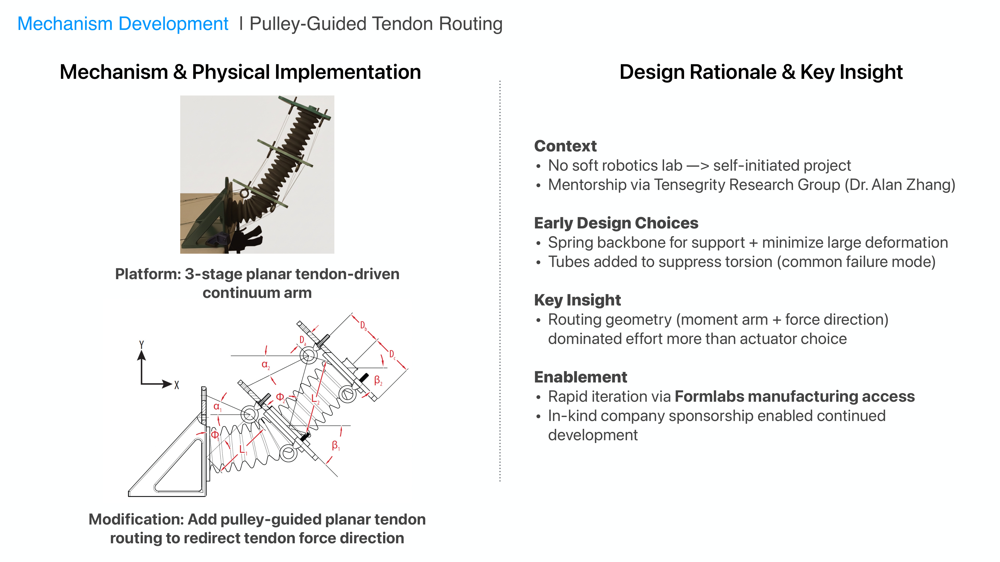

Pulley-guided tendon routing

A tendon-driven continuum arm project investigating whether routing geometry can reduce actuation effort without increasing compliance. The work compares straight routing against pulley-guided tendon routing and frames the mechanism around moment arm and force-direction changes.
Project framing
- Problem-driven mechanical design with rapid build-test iteration.
- Emphasis on geometry, material behavior, and manufacturable implementation.
- Presented as a concise case study; replace this text with deeper methods, results, and figures when ready.